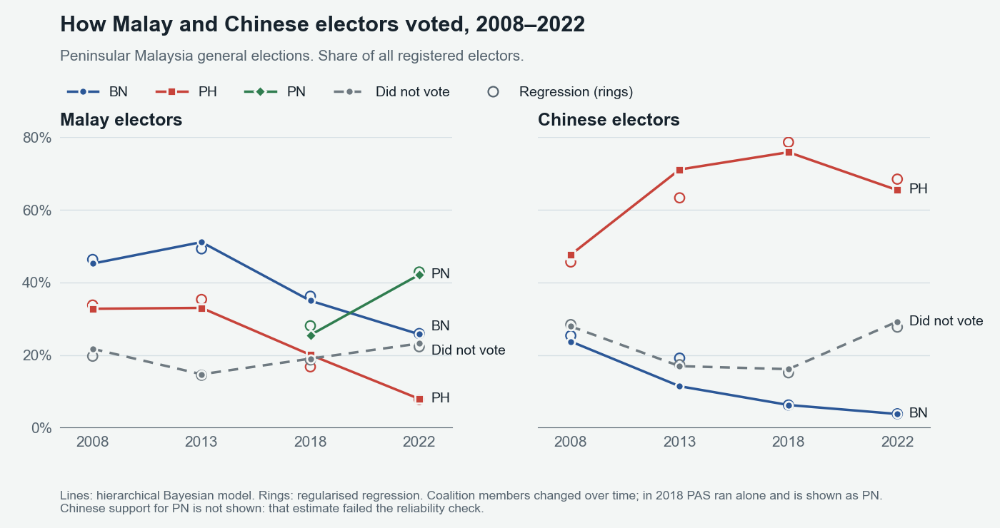

Who voted how: Malaysian elections
I estimated how different ethnic and age groups voted in Peninsular Malaysia’s general elections from 2008 to 2022, and in several state elections, using polling-district results and demographics. Results are only published as totals, so group-level patterns have to be estimated.
What I did
- Built one dataset across four general elections and several state elections, mapping parties to coalitions as alliances changed.
- Estimated group voting with two methods, a fast regularised regression and a hierarchical Bayesian model, and compared them.
- Compared newly registered voters with established ones after the voting age was lowered to 18.
- Ran Monte Carlo seat simulations and “what if” scenarios, such as two coalitions combining.
- Ran long model jobs on cloud machines and recovered them when they were interrupted.
How I check it Regression estimates get two checks: a refit without the model’s limits and a bootstrap confidence interval. Those that fail are flagged rather than reported. Bayesian results are checked for convergence across three independent chains and compared against the regression.
